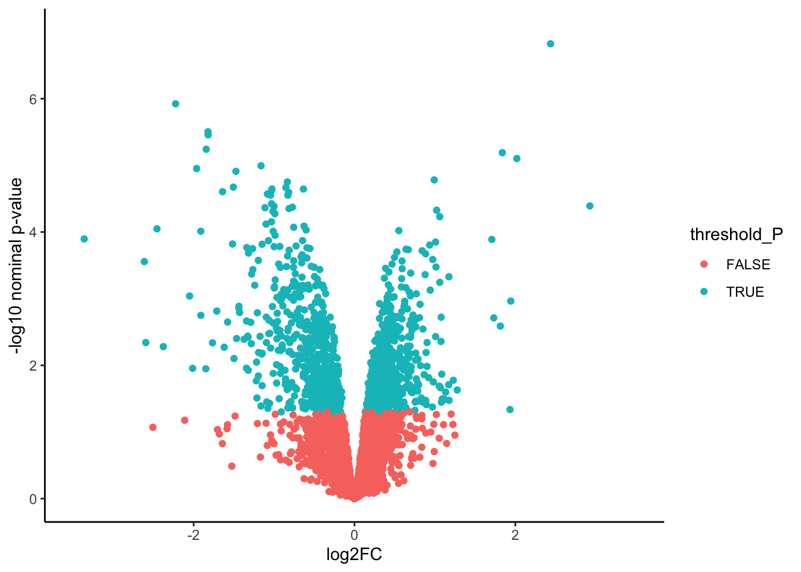
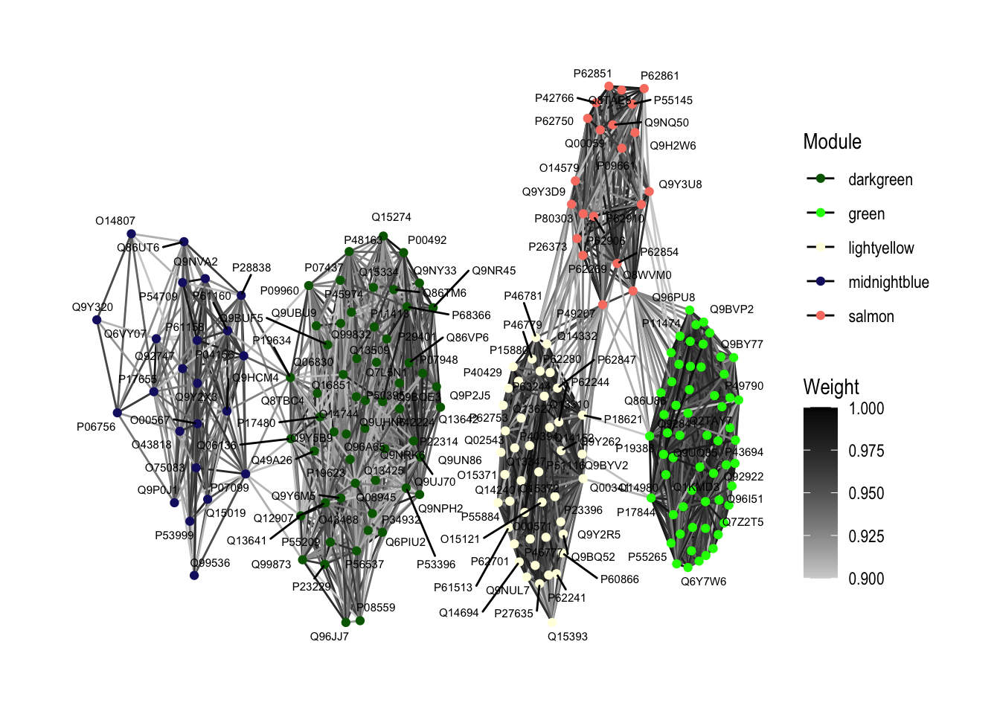
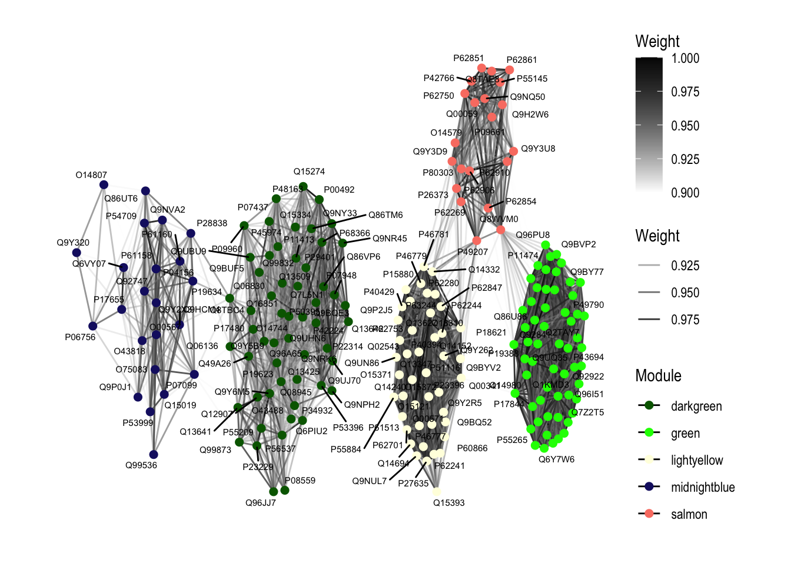

Johnson_DOX_24_2
Omar Johnson
2024-07-16
Last updated: 2024-07-23
Checks: 7 0
Knit directory: DOX_24_Github/
This reproducible R Markdown analysis was created with workflowr (version 1.7.1). The Checks tab describes the reproducibility checks that were applied when the results were created. The Past versions tab lists the development history.
Great! Since the R Markdown file has been committed to the Git repository, you know the exact version of the code that produced these results.
Great job! The global environment was empty. Objects defined in the global environment can affect the analysis in your R Markdown file in unknown ways. For reproduciblity it’s best to always run the code in an empty environment.
The command set.seed(20240723) was run prior to running
the code in the R Markdown file. Setting a seed ensures that any results
that rely on randomness, e.g. subsampling or permutations, are
reproducible.
Great job! Recording the operating system, R version, and package versions is critical for reproducibility.
Nice! There were no cached chunks for this analysis, so you can be confident that you successfully produced the results during this run.
Great job! Using relative paths to the files within your workflowr project makes it easier to run your code on other machines.
Great! You are using Git for version control. Tracking code development and connecting the code version to the results is critical for reproducibility.
The results in this page were generated with repository version 88c6686. See the Past versions tab to see a history of the changes made to the R Markdown and HTML files.
Note that you need to be careful to ensure that all relevant files for
the analysis have been committed to Git prior to generating the results
(you can use wflow_publish or
wflow_git_commit). workflowr only checks the R Markdown
file, but you know if there are other scripts or data files that it
depends on. Below is the status of the Git repository when the results
were generated:
Ignored files:
Ignored: .DS_Store
Ignored: analysis/Johnson_DOX_24_2.html
Ignored: analysis/Johnson_DOX_24_3.html
Ignored: analysis/Johnson_DOX_24_4.html
Ignored: analysis/Johnson_DOX_24_5.html
Ignored: analysis/Johnson_DOX_24_6.html
Ignored: analysis/Johnson_DOX_24_7.html
Ignored: analysis/Johnson_DOX_24_8.html
Ignored: analysis/Johnson_DOX_24_RUV_Limma.html
Untracked files:
Untracked: Fig_2.Rmd
Untracked: Fig_2.html
Untracked: analysis/Johnson_DOX_24_RUV_Limma.Rmd
Note that any generated files, e.g. HTML, png, CSS, etc., are not included in this status report because it is ok for generated content to have uncommitted changes.
These are the previous versions of the repository in which changes were
made to the R Markdown (analysis/Johnson_DOX_24_2.Rmd) and
HTML (docs/Johnson_DOX_24_2.html) files. If you’ve
configured a remote Git repository (see ?wflow_git_remote),
click on the hyperlinks in the table below to view the files as they
were in that past version.
| File | Version | Author | Date | Message |
|---|---|---|---|---|
| Rmd | 88c6686 | Omar-Johnson | 2024-07-23 | Publish the initial files for myproject |
Load Libraries
Read in Data
Generate and view initial objects
# Undo log tranformation
RUVg_Log2_quantnormalized_all10samples %>% head() S1 S3 S5 S7 S9 S2 S4
A0A0B4J2A2 328.5554 326.9973 344.8820 349.3119 352.7209 333.5604 343.2972
A0A0B4J2D5 575.3541 580.4938 574.6771 568.2429 573.3663 571.9707 564.5982
A0A494C071 319.5122 317.2598 303.3583 322.1064 317.5238 328.8213 328.9263
A0AVT1 174.4011 178.2046 205.8086 196.3262 195.1595 173.2376 180.2296
A0FGR8 411.5794 406.2913 397.4114 401.4574 400.3695 405.4398 406.3051
A0JLT2 324.3169 318.3035 315.9126 304.1986 322.8292 324.8402 324.0475
S6 S8 S10
A0A0B4J2A2 343.7512 340.3927 346.0124
A0A0B4J2D5 564.3974 562.3821 559.3047
A0A494C071 316.6769 326.8686 312.6095
A0AVT1 195.4427 178.4695 182.9383
A0FGR8 403.6977 405.8293 402.7064
A0JLT2 309.3706 297.4752 323.7055RUVg_Log2_quantnormalized_all10samples %>% dim()[1] 4178 10# Create summarized experiment object
WGCNA_DF <- SummarizedExperiment(assays = as.matrix(RUVg_Log2_quantnormalized_all10samples))
dim(RUVg_Log2_quantnormalized_all10samples) [1] 4178 10exp_filt <- filter_by_variance(WGCNA_DF, n = 4178)
exp_filt %>% assay() %>% head() S1 S3 S5 S7 S9 S2 S4
A0A0B4J2A2 328.5554 326.9973 344.8820 349.3119 352.7209 333.5604 343.2972
A0A0B4J2D5 575.3541 580.4938 574.6771 568.2429 573.3663 571.9707 564.5982
A0A494C071 319.5122 317.2598 303.3583 322.1064 317.5238 328.8213 328.9263
A0AVT1 174.4011 178.2046 205.8086 196.3262 195.1595 173.2376 180.2296
A0FGR8 411.5794 406.2913 397.4114 401.4574 400.3695 405.4398 406.3051
A0JLT2 324.3169 318.3035 315.9126 304.1986 322.8292 324.8402 324.0475
S6 S8 S10
A0A0B4J2A2 343.7512 340.3927 346.0124
A0A0B4J2D5 564.3974 562.3821 559.3047
A0A494C071 316.6769 326.8686 312.6095
A0AVT1 195.4427 178.4695 182.9383
A0FGR8 403.6977 405.8293 402.7064
A0JLT2 309.3706 297.4752 323.7055toptable_summary %>% head() logFC AveExpr t P.Value adj.P.Val B Protein
Q15061 2.436903 18.60721 26.00939 1.499311e-07 1.499311e-07 7.414993 Q15061
O76021 -2.224860 21.98800 -18.86036 1.191879e-06 1.191879e-06 6.029757 O76021
P43694 -1.821642 18.81578 -15.98230 3.129665e-06 3.129665e-06 5.276514 P43694
P01130 -1.819689 20.01194 -15.77595 3.483331e-06 3.483331e-06 5.186033 P01130
Q96P11 -1.843458 17.28018 -14.33937 5.735316e-06 5.735316e-06 4.764600 Q96P11
Q6EMK4 1.838032 19.30419 14.22737 6.455771e-06 6.455771e-06 4.660093 Q6EMK4
threshold_P
Q15061 TRUE
O76021 TRUE
P43694 TRUE
P01130 TRUE
Q96P11 TRUE
Q6EMK4 TRUEMeta Samples Ind Rep Cond Cond_Ind
S1 S1 B_77 Bio Dox B_77_Dox
S3 S3 C_87 Bio Dox C_87_Dox
S5 S5 A_48 Tech Dox A_48_Dox
S7 S7 A_48 Tech Dox A_48_Dox
S9 S9 A_48 Tech Dox A_48_Dox
S2 S2 B_77 Bio Control B_77_Control
S4 S4 C_87 Bio Control C_87_Control
S6 S6 A_48 Tech Control A_48_Control
S8 S8 A_48 Tech Control A_48_Control
S10 S10 A_48 Tech Control A_48_ControlS3-A&B-SFT power threshold
# Determine the soft power threshold to get scale free shape
sft <- SFT_fit(exp_filt, net_type = "signed", rsquared = 0.7, cor_method = "pearson")Warning: executing %dopar% sequentially: no parallel backend registered Power SFT.R.sq slope truncated.R.sq mean.k. median.k. max.k.
1 3 0.55000 2.6800 0.956 929.0 932.0 1260
2 4 0.57900 1.9100 0.964 683.0 681.0 1000
3 5 0.49000 1.2600 0.947 526.0 520.0 832
4 6 0.34100 0.7670 0.917 418.0 408.0 712
5 7 0.17700 0.4390 0.860 340.0 331.0 620
6 8 0.02530 0.1350 0.806 283.0 273.0 551
7 9 0.00557 -0.0588 0.776 239.0 229.0 494
8 10 0.09410 -0.2400 0.775 204.0 194.0 448
9 11 0.21900 -0.3780 0.792 177.0 166.0 408
10 12 0.34300 -0.4890 0.820 154.0 143.0 374
11 13 0.43300 -0.5810 0.832 136.0 124.0 345
12 14 0.50200 -0.6480 0.847 120.0 109.0 319
13 15 0.55400 -0.7050 0.866 107.0 95.7 297
14 16 0.59700 -0.7490 0.883 96.3 84.6 277
15 17 0.64100 -0.7900 0.902 86.9 75.3 259
16 18 0.66900 -0.8330 0.909 78.7 67.1 243
17 19 0.69800 -0.8680 0.920 71.6 59.8 228
18 20 0.70900 -0.9210 0.916 65.4 53.6 216sft$plot
Modify workflow to construct a simpler network
exp2gcn2_EDIT <- function (exp, net_type = "signed", module_merging_threshold = 0.8,
SFTpower = NULL, cor_method = "spearman", verbose = FALSE)
{
params <- list(net_type = net_type, module_merging_threshold = module_merging_threshold,
SFTpower = SFTpower, cor_method = cor_method)
norm.exp <- BioNERO:::handleSE(exp)
if (is.null(SFTpower)) {
stop("Please, specify the SFT power.")
}
if (verbose) {
message("Calculating adjacency matrix...")
}
cor_matrix <- BioNERO:::calculate_cor_adj(cor_method, norm.exp, SFTpower,
net_type)$cor
adj_matrix <- BioNERO:::calculate_cor_adj(cor_method, norm.exp, SFTpower,
net_type)$adj
gene_ids <- rownames(adj_matrix)
adj_matrix <- matrix(adj_matrix, nrow = nrow(adj_matrix))
rownames(adj_matrix) <- gene_ids
colnames(adj_matrix) <- gene_ids
if (verbose) {
message("Calculating topological overlap matrix (TOM)...")
}
tomtype <- BioNERO:::get_TOMtype(net_type)
TOM <- WGCNA::TOMsimilarity(adj_matrix, TOMType = tomtype)
dissTOM <- 1 - TOM
geneTree <- hclust(as.dist(dissTOM), method = "average")
if (verbose) {
message("Detecting coexpression modules...")
}
old.module_labels <- dynamicTreeCut::cutreeDynamicTree(dendro = geneTree, maxTreeHeight = 3 ,
minModuleSize = 40, deepSplit = FALSE)
nmod <- length(unique(old.module_labels))
palette <- rev(WGCNA::standardColors(nmod))
old.module_colors <- WGCNA::labels2colors(old.module_labels,
colorSeq = palette)
if (verbose) {
message("Calculating module eigengenes (MEs)...")
}
old.MElist <- WGCNA::moduleEigengenes(t(norm.exp), colors = old.module_colors,
softPower = SFTpower)
old.MEs <- old.MElist$eigengenes
MEDiss1 <- 1 - cor(old.MEs)
old.METree <- hclust(as.dist(MEDiss1), method = "average")
MEDissThreshold <- 1 - module_merging_threshold
if (verbose) {
message("Merging similar modules...")
}
if (cor_method == "pearson") {
merge1 <- WGCNA::mergeCloseModules(t(norm.exp), old.module_colors,
cutHeight = MEDissThreshold, verbose = 0, colorSeq = palette)
}
else if (cor_method == "spearman") {
merge1 <- WGCNA::mergeCloseModules(t(norm.exp), old.module_colors,
cutHeight = MEDissThreshold, verbose = 0, corOptions = list(use = "p",
method = "spearman"), colorSeq = palette)
}
else if (cor_method == "biweight") {
merge1 <- WGCNA::mergeCloseModules(t(norm.exp), old.module_colors,
cutHeight = MEDissThreshold, verbose = 0, corFnc = bicor,
colorSeq = palette)
}
else {
stop("Please, specify a correlation method. One of 'spearman', 'pearson' or 'biweight'.")
}
new.module_colors <- merge1$colors
new.MEs <- merge1$newMEs
new.METree <- hclust(as.dist(1 - cor(new.MEs)), method = "average")
genes_and_modules <- as.data.frame(cbind(gene_ids, new.module_colors))
colnames(genes_and_modules) <- c("Genes", "Modules")
if (verbose) {
message("Calculating intramodular connectivity...")
}
kwithin <- WGCNA::intramodularConnectivity(adj_matrix, new.module_colors)
result.list <- list(adjacency_matrix = adj_matrix, MEs = new.MEs,
genes_and_modules = genes_and_modules, kIN = kwithin,
correlation_matrix = cor_matrix, params = params, dendro_plot_objects = list(tree = geneTree,
unmerged = old.module_colors))
return(result.list)
}Fig S3-C,D
net <- exp2gcn2_EDIT(
exp_filt, net_type = "signed", module_merging_threshold = 0.9999, SFTpower = 20,
cor_method = "pearson")..connectivity..
..matrix multiplication (system BLAS)..
..normalization..
..done.# Eigengene networks
WGCNA::plotEigengeneNetworks(net$MEs, "", marDendro = c(3, 5, 2, 6), plotHeatmaps = FALSE)
WGCNA::plotEigengeneNetworks(net$MEs, "", marHeatmap = c(3, 4, 2, 2), plotDendrograms = FALSE)
# Genes per module
plot_ngenes_per_module(net)
Figure-2-A & Fig S3-E Weighted protein co-expression network
net <- exp2gcn2_EDIT(
exp_filt, net_type = "signed", module_merging_threshold = 0.85, SFTpower = 20,
cor_method = "pearson")..connectivity..
..matrix multiplication (system BLAS)..
..normalization..
..done.# Dendogram
plot_dendro_and_colors(net )
NULL# Eigengene networks
WGCNA::plotEigengeneNetworks(net$MEs, "", marDendro = c(3, 5, 2, 6), plotHeatmaps = FALSE, excludeGrey = TRUE)
WGCNA::plotEigengeneNetworks(net$MEs, "", marHeatmap = c(3, 4, 2, 2), plotDendrograms = FALSE)
# Genes per module
plot_ngenes_per_module(net)
Fig-2-A-Define trait and get eigen proteins
Meta Samples Ind Rep Cond Cond_Ind
S1 S1 B_77 Bio Dox B_77_Dox
S3 S3 C_87 Bio Dox C_87_Dox
S5 S5 A_48 Tech Dox A_48_Dox
S7 S7 A_48 Tech Dox A_48_Dox
S9 S9 A_48 Tech Dox A_48_Dox
S2 S2 B_77 Bio Control B_77_Control
S4 S4 C_87 Bio Control C_87_Control
S6 S6 A_48 Tech Control A_48_Control
S8 S8 A_48 Tech Control A_48_Control
S10 S10 A_48 Tech Control A_48_ControlWGCNA_DF$trait <- c(1,1,1,1,1,0,0,0,0,0)
names(WGCNA_DF$trait) <- c("S1", "S3", "S5", "S7", "S9", "S2", "S4", "S6", "S8", "S10")
eigenmatrix <- net$MEs %>% as.matrix()
eigenmatrix MEbrown MEdarkred MEmagenta MElightgreen MEblue MEgreen
S1 0.36003677 -0.2639588 -0.53400488 0.1624083 0.3173739 -0.1131196
S3 0.43134287 -0.2307183 -0.32791330 0.0133864 -0.3246717 -0.3061329
S5 -0.27190088 0.3619056 0.07758495 -0.5740907 -0.2186320 -0.3565624
S7 -0.06510474 0.2583481 0.16556089 -0.5684963 -0.1725624 -0.3424670
S9 -0.10247250 0.3147035 0.14165243 0.2031542 -0.3216840 -0.4130655
S2 -0.32744358 -0.5916179 -0.32584468 -0.0257309 -0.3667293 0.2538724
S4 -0.56198938 -0.3694736 -0.24572255 -0.1004831 0.1181946 0.3625280
S6 -0.03609935 0.1421290 0.23242445 0.3285150 0.1890285 0.3088566
S8 0.34498267 0.1584062 0.40111124 0.2408316 0.1401821 0.2612112
S10 0.22864811 0.2202760 0.41515145 0.3205055 0.6395003 0.3448792
MElightyellow MEsalmon MEyellow MEroyalblue MEdarkgreen
S1 -0.42213716 -0.20861515 -0.16354103 0.6227290 0.2200339
S3 -0.43037879 -0.21728776 -0.09059440 0.2908742 0.0829352
S5 -0.21202797 -0.59149983 0.03250180 -0.2830170 0.4863249
S7 -0.08734748 -0.19344921 -0.06042544 -0.2845027 0.3021103
S9 -0.10372050 -0.07672494 0.01599754 -0.2498493 0.3220647
S2 -0.08510748 0.07920073 0.12616898 0.2954940 -0.5532726
S4 0.06259889 0.05635206 0.13976425 0.2536810 -0.3437305
S6 0.33150327 0.17724855 0.36410610 -0.1669567 -0.1742458
S8 0.42785242 0.47947091 -0.78440804 -0.3104020 -0.1741527
S10 0.51876480 0.49530464 0.42043023 -0.1680506 -0.1680674
MEmidnightblue MEgrey
S1 0.45236688 -0.19623808
S3 0.31111504 0.12600955
S5 0.21889338 0.51048881
S7 0.19025192 0.14926146
S9 0.18317149 0.42428210
S2 -0.12746118 -0.42289741
S4 -0.07461793 -0.54531562
S6 -0.15044641 -0.06538022
S8 -0.63044435 0.04181154
S10 -0.37282884 -0.02202211correlationResults <- cor(eigenmatrix, WGCNA_DF$trait, method= "pearson")
pvalues <- sapply(1:ncol(eigenmatrix), function(column) cor.test(eigenmatrix[,column], WGCNA_DF$trait)$p.value )
WGCNA_DF$trait <- as.matrix(WGCNA_DF$trait)
Modeigen <- as.matrix(net$MEs)
# Trait data frame
trait_data <- data.frame(
ME = correlationResults %>% rownames(),
Value = correlationResults[,1],
PValue = pvalues
)
trait_data ME Value PValue
MEbrown MEbrown 0.22256206 5.365530e-01
MEdarkred MEdarkred 0.27845763 4.359480e-01
MEmagenta MEmagenta -0.30175713 3.968000e-01
MElightgreen MElightgreen -0.48296709 1.573695e-01
MEblue MEblue -0.45547944 1.858861e-01
MEgreen MEgreen -0.96850913 4.141994e-06
MElightyellow MElightyellow -0.79411869 6.080134e-03
MEsalmon MEsalmon -0.81433512 4.127690e-03
MEyellow MEyellow -0.16827208 6.421517e-01
MEroyalblue MEroyalblue 0.06086385 8.673524e-01
MEdarkgreen MEdarkgreen 0.89395628 4.859072e-04
MEmidnightblue MEmidnightblue 0.85748240 1.514177e-03
MEgrey MEgrey 0.64118584 4.572349e-02Drug_trait_results <- trait_data
WGCNA_DF$trait <- c(1,2,3,3,3,1,2,3,3,3)
names(WGCNA_DF$trait) <- c("S1", "S3", "S5", "S7", "S9", "S2", "S4", "S6", "S8", "S10")
eigenmatrix <- net$MEs %>% as.matrix()
correlationResults <- cor(eigenmatrix, WGCNA_DF$trait, method="pearson")
pvalues <- sapply(1:ncol(eigenmatrix), function(column) cor.test(eigenmatrix[,column], WGCNA_DF$trait)$p.value )
WGCNA_DF$trait <- as.matrix(WGCNA_DF$trait)
Modeigen <- as.matrix(net$MEs)
# Trait data frame
trait_data <- data.frame(
ME = correlationResults %>% rownames(),
Value = correlationResults[,1],
PValue = pvalues
)
trait_data$neglogP <- -log(trait_data$PValue)
trait_data ME Value PValue neglogP
MEbrown MEbrown 0.02587538 9.434355e-01 0.05822730
MEdarkred MEdarkred 0.91363938 2.190321e-04 8.42629226
MEmagenta MEmagenta 0.90652025 2.980430e-04 8.11827275
MElightgreen MElightgreen -0.07362501 8.398155e-01 0.17457307
MEblue MEblue 0.12063614 7.399155e-01 0.30121933
MEgreen MEgreen -0.13356703 7.129791e-01 0.33830321
MElightyellow MElightyellow 0.54638987 1.022246e-01 2.28058314
MEsalmon MEsalmon 0.16592650 6.468648e-01 0.43561802
MEyellow MEyellow 0.01010911 9.778886e-01 0.02235954
MEroyalblue MEroyalblue -0.94117339 4.878437e-05 9.92810051
MEdarkgreen MEdarkgreen 0.36653672 2.975164e-01 1.21228598
MEmidnightblue MEmidnightblue -0.35034420 3.209631e-01 1.13642916
MEgrey MEgrey 0.65521486 3.973991e-02 3.22539939# Get modules that significantly associate with DOX treatment
Signifigant_modules <- trait_data[trait_data$PValue < 0.01, ]$ME
# Get your genes/proteins and modules DF
Gene_mod_DF <- net$genes_and_modules
Drug_trait_results_sub <- Drug_trait_results[,c(1,2,3)]
colnames(Drug_trait_results_sub) <- c("Module", "cor", "pval")
Drug_trait_results_sub$Trait <- "DOX"
Drug_trait_results_sub Module cor pval Trait
MEbrown MEbrown 0.22256206 5.365530e-01 DOX
MEdarkred MEdarkred 0.27845763 4.359480e-01 DOX
MEmagenta MEmagenta -0.30175713 3.968000e-01 DOX
MElightgreen MElightgreen -0.48296709 1.573695e-01 DOX
MEblue MEblue -0.45547944 1.858861e-01 DOX
MEgreen MEgreen -0.96850913 4.141994e-06 DOX
MElightyellow MElightyellow -0.79411869 6.080134e-03 DOX
MEsalmon MEsalmon -0.81433512 4.127690e-03 DOX
MEyellow MEyellow -0.16827208 6.421517e-01 DOX
MEroyalblue MEroyalblue 0.06086385 8.673524e-01 DOX
MEdarkgreen MEdarkgreen 0.89395628 4.859072e-04 DOX
MEmidnightblue MEmidnightblue 0.85748240 1.514177e-03 DOX
MEgrey MEgrey 0.64118584 4.572349e-02 DOXInd_trait_sub <- trait_data[,c(1,2,3)]
colnames(Ind_trait_sub) <- c("Module","cor", "pval")
Ind_trait_sub$Trait <- "IND."
Fulltrait_df <- rbind(Drug_trait_results_sub,Ind_trait_sub)
Fulltrait_df Module cor pval Trait
MEbrown MEbrown 0.22256206 5.365530e-01 DOX
MEdarkred MEdarkred 0.27845763 4.359480e-01 DOX
MEmagenta MEmagenta -0.30175713 3.968000e-01 DOX
MElightgreen MElightgreen -0.48296709 1.573695e-01 DOX
MEblue MEblue -0.45547944 1.858861e-01 DOX
MEgreen MEgreen -0.96850913 4.141994e-06 DOX
MElightyellow MElightyellow -0.79411869 6.080134e-03 DOX
MEsalmon MEsalmon -0.81433512 4.127690e-03 DOX
MEyellow MEyellow -0.16827208 6.421517e-01 DOX
MEroyalblue MEroyalblue 0.06086385 8.673524e-01 DOX
MEdarkgreen MEdarkgreen 0.89395628 4.859072e-04 DOX
MEmidnightblue MEmidnightblue 0.85748240 1.514177e-03 DOX
MEgrey MEgrey 0.64118584 4.572349e-02 DOX
MEbrown1 MEbrown 0.02587538 9.434355e-01 IND.
MEdarkred1 MEdarkred 0.91363938 2.190321e-04 IND.
MEmagenta1 MEmagenta 0.90652025 2.980430e-04 IND.
MElightgreen1 MElightgreen -0.07362501 8.398155e-01 IND.
MEblue1 MEblue 0.12063614 7.399155e-01 IND.
MEgreen1 MEgreen -0.13356703 7.129791e-01 IND.
MElightyellow1 MElightyellow 0.54638987 1.022246e-01 IND.
MEsalmon1 MEsalmon 0.16592650 6.468648e-01 IND.
MEyellow1 MEyellow 0.01010911 9.778886e-01 IND.
MEroyalblue1 MEroyalblue -0.94117339 4.878437e-05 IND.
MEdarkgreen1 MEdarkgreen 0.36653672 2.975164e-01 IND.
MEmidnightblue1 MEmidnightblue -0.35034420 3.209631e-01 IND.
MEgrey1 MEgrey 0.65521486 3.973991e-02 IND.Fulltrait_df$annotation <- ifelse(Fulltrait_df$pval < 0.01, "*", "")
module_order <- c("MEbrown", "MEdarkred", "MEmagenta", "MElightgreen", "MEblue", "MEgreen","MElightyellow","MEsalmon","MEyellow","MEroyalblue","MEdarkgreen", "MEmidnightblue", "MEgrey")
# Factor the Module column in Fulltrait_df
Fulltrait_df$Module <- factor(Fulltrait_df$Module, levels = module_order)
ggplot(Fulltrait_df, aes(x = Module, y = Trait, fill = cor)) +
geom_tile() +
# First geom_text for annotations
geom_text(aes(label = annotation), color = "black", size = 10) +
# Second geom_text for correlation values
geom_text(aes(label = sprintf("%.2f", cor)), color = "black", size = 4, vjust = .8) +
scale_fill_gradient2(
low = "blue",
high = "red",
mid = "white",
midpoint = 0,
name = "Correlation",
limits = c(-1, 1) # Set the limits for the color scale
) +
labs(x = "Trait", y = "Module") +
theme_minimal() +
theme(axis.text.x = element_text(angle = 45, hjust = 1))
Figure-2-B - Pairwise differential abundance of proteins
# Get your genes/proteins and modules DF
Gene_mod_DF <- net$genes_and_modules
# Module data gets merged with toptable
toptable_summary %>% head() logFC AveExpr t P.Value adj.P.Val B Protein
Q15061 2.436903 18.60721 26.00939 1.499311e-07 1.499311e-07 7.414993 Q15061
O76021 -2.224860 21.98800 -18.86036 1.191879e-06 1.191879e-06 6.029757 O76021
P43694 -1.821642 18.81578 -15.98230 3.129665e-06 3.129665e-06 5.276514 P43694
P01130 -1.819689 20.01194 -15.77595 3.483331e-06 3.483331e-06 5.186033 P01130
Q96P11 -1.843458 17.28018 -14.33937 5.735316e-06 5.735316e-06 4.764600 Q96P11
Q6EMK4 1.838032 19.30419 14.22737 6.455771e-06 6.455771e-06 4.660093 Q6EMK4
threshold_P
Q15061 TRUE
O76021 TRUE
P43694 TRUE
P01130 TRUE
Q96P11 TRUE
Q6EMK4 TRUEToptable_Modules <- merge(toptable_summary,
Gene_mod_DF, by.x = "Protein", by.y = "Genes")
# Create the volcano plot
ggplot(Toptable_Modules)+
geom_point(mapping = aes(x = logFC, y = -log10(P.Value), color = threshold_P))+
xlab("log2FC")+
ylab("-log10 nominal p-value")+
ylim(0, 7)+
xlim(-3.5, 3.5)+
theme(legend.position = "none",
plot.title = element_text(size = rel(1.5), hjust = 0.5),
axis.title = element_text(size = rel(1.25)))+
theme_classic()
Figure-2-C Module composition for differentilly abundant proteins
# Plotting LogFC between DE and non DE proteins
Toptable_Modules$DE_or_Not <- Toptable_Modules$P.Value < 0.05
# Calculate percentage of DE genes for each module
DE_Mod_result <- Toptable_Modules %>%
group_by(Modules) %>%
summarize(
total_genes = n(),
DE_genes = sum(P.Value < 0.05),
percent_DE = (DE_genes / total_genes) * 100
)
print(DE_Mod_result)# A tibble: 13 × 4
Modules total_genes DE_genes percent_DE
<chr> <int> <int> <dbl>
1 blue 45 1 2.22
2 brown 49 10 20.4
3 darkgreen 560 319 57.0
4 darkred 798 96 12.0
5 green 579 315 54.4
6 grey 106 9 8.49
7 lightgreen 262 14 5.34
8 lightyellow 437 142 32.5
9 magenta 129 0 0
10 midnightblue 233 122 52.4
11 royalblue 715 55 7.69
12 salmon 208 84 40.4
13 yellow 57 0 0 DE_Mod_result[DE_Mod_result$Modules %in% c("green","darkgreen", "midnightblue", "lightyellow", "salmon"), ]$percent_DE %>% range()[1] 32.49428 56.96429DE_Mod_result[!(DE_Mod_result$Modules %in% c("green","darkgreen", "midnightblue", "lightyellow", "salmon")), ]$percent_DE %>% range()[1] 0.00000 20.40816# Plot
ggplot(DE_Mod_result, aes(x = Modules, y = percent_DE)) +
geom_bar(stat = "identity") +
labs(
x = "Module",
y = "Percentage of DE genes",
title = "Percentage of DE genes in each module",
fill = "Module"
) +
theme_minimal() +
theme(axis.text.x = element_text(angle = 45, hjust = 1))
# Compute complementary percentage for non-DE genes
DE_Mod_result$percent_nonDE <- 100 - DE_Mod_result$percent_DE
# Reshape data to long format
long_data <- DE_Mod_result %>%
pivot_longer(cols = c(percent_DE, percent_nonDE),
names_to = "type",
values_to = "percentage")
module_order <- c("green","darkgreen","midnightblue","salmon", "lightyellow", "lightgreen", "blue","magenta", "darkred","brown", "yellow","royalblue", "grey")
# Factor the Module column in Fulltrait_df
long_data$Modules <- factor(long_data$Modules, levels = module_order)
# Plot stacked bar chart
ggplot(long_data, aes(x = Modules, y = percentage, fill = type)) +
geom_bar(stat = "identity") +
labs(
x = "Module",
y = "Percentage",
title = "Percentage of DE and non-DE genes in each module",
fill = "Type"
) +
theme_minimal() +
theme(axis.text.x = element_text(angle = 45, hjust = 1))+
scale_y_continuous(breaks = rev(seq(0, 100, by = 10)))
Figure-2-D DOX-response effect size
Toptable_Modules_DOXcorset <- Toptable_Modules[Toptable_Modules$Modules %in% c("green", "lightyellow" , "salmon", "darkgreen" ,"midnightblue"), ]
# Density
ggplot(Toptable_Modules_DOXcorset, aes(x = logFC, fill = Modules)) +
geom_density(alpha = 0.9) +
labs(title = "Distribution of logFC Values in DOX correlated modules",
x = "logFC",
y = "Density") +
theme_minimal() +
theme(legend.position = "right")+
xlim(-2,2)+
ylim(0, 4.5)+
scale_fill_identity(guide = "legend")Warning: Removed 10 rows containing non-finite values (`stat_density()`).
Toptable_Modules_DOXcorset_SAYANversion <- Toptable_Modules_DOXcorset
Toptable_Modules_DOXcorset_SAYANversion$Modules[Toptable_Modules_DOXcorset_SAYANversion$Modules == "lightyellow"] <- "goldenrod"
# Full graph
module_order <- c("green","darkgreen","midnightblue", "salmon","goldenrod")
# Factor the Module column in Fulltrait_df
Toptable_Modules_DOXcorset_SAYANversion$Modules <- factor(Toptable_Modules_DOXcorset_SAYANversion$Modules, levels = rev(module_order))
# Density
ggplot(Toptable_Modules_DOXcorset_SAYANversion, aes(x = logFC, fill = Modules)) +
geom_density(alpha = 0.9) +
labs(title = "Distribution of logFC Values in DOX correlated modules",
x = "logFC",
y = "Density") +
theme_classic() +
theme(legend.position = "right")+
xlim(-2,2)+
ylim(0, 4)+
scale_fill_identity(guide = "legend")Warning: Removed 10 rows containing non-finite values (`stat_density()`).
Toptable_Modules_NonDOXcorset <- Toptable_Modules[Toptable_Modules$Modules %in% c("darkred", "royalblue" ,"lightgreen", "magenta", "blue" ,"brown", "yellow"), ]
# Density
ggplot(Toptable_Modules_NonDOXcorset, aes(x = logFC, fill = Modules)) +
geom_density(alpha = 0.9 ) +
labs(title = "Distribution of logFC Values in modules not correlaated to DOX",
x = "logFC",
y = "Density") +
theme_minimal() +
theme(legend.position = "right")+
xlim(-2,2)+
ylim(0, 4.5)+
scale_fill_identity(guide = "legend")Warning: Removed 3 rows containing non-finite values (`stat_density()`).
Figure-2-E Hub protein expresssion examples
boxplot(as.matrix(log2(RUVg_Log2_quantnormalized_all10samples))["Q96GQ7",] ~ Meta$Cond, data=Meta, main="DDX27",
ylab="Log2 Abundance", xlab="", col = c("green","green"), ylim = c(8,9))
boxplot(as.matrix(log2(RUVg_Log2_quantnormalized_all10samples))["Q9BRB3",] ~ Meta$Cond, data=Meta, main="PIGQ",
ylab="Log2 Abundance", xlab="", col = c("yellow","yellow"), ylim = c(8,9))
Figure-2-F-Hub protein co-expression network
#### Version1####
hubs_traitcorr <- hubs[hubs$Module %in% c( "darkgreen", "green" , "lightyellow", "midnightblue", "salmon"), ]
hubs_traitcorr_toptable <- merge(hubs_traitcorr, Toptable_Modules, by.x="Gene" , by.y= "Protein")
My_edge_list <- BioNERO::get_edge_list(net)
# Get a data frame of DOX corr. hubs connecting all to all
My_edge_list_hubs <- My_edge_list %>%
filter(Gene1 %in% hubs_traitcorr$Gene & Gene2 %in% hubs_traitcorr$Gene)
# looks like it is too big for plotting try something else
# Create a helper dataframe with Gene and Module from hubs_traitcorr
helper_df <- hubs_traitcorr %>% dplyr::select(Gene, Module)
# Now, subset My_edge_list based on the conditions
My_edge_list_hubs_same_module <- My_edge_list_hubs %>%
dplyr::filter(
Gene1 %in% helper_df$Gene &
Gene2 %in% helper_df$Gene
) %>%
dplyr::filter(
helper_df$Module[match(Gene1, helper_df$Gene)] ==
helper_df$Module[match(Gene2, helper_df$Gene)]
)
My_edge_list_hubs_same_module %>% head() Gene1 Gene2 Weight
1 O00567 O14807 0.8746559
2 O00571 O15121 0.9570017
3 O00571 O15371 0.9484436
4 O15121 O15371 0.9756670
5 O00571 O15372 0.9640689
6 O15121 O15372 0.9737202My_edge_list_hubs_same_module_filt <- My_edge_list_hubs_same_module[My_edge_list_hubs_same_module$Weight > 0.9, ]
#### Version 2 fully connected ####
# Create an igraph graph object
graph_network <- graph_from_data_frame(d = My_edge_list_hubs[My_edge_list_hubs$Weight > 0.9, ], directed = FALSE)
# Prepare the node attribute data frame with gene and module information
node_attributes <- dplyr::select(hubs_traitcorr, Gene, Module) %>% unique()
# Add the module information to the graph
V(graph_network)$Module <- node_attributes$Module[match(names(V(graph_network)), node_attributes$Gene)]
ggraph(graph_network, layout = "stress") +
geom_edge_link(aes(edge_color = Weight), show.legend = TRUE) +
geom_node_point(aes(color = Module), stroke = 0.5) + # Color nodes by module
geom_node_text(aes(label = name), repel = TRUE, size = 2) +
scale_edge_color_continuous(low = "lightgrey", high = "black", limits = c(0.9, 1)) + # Scale edge color by weight
scale_color_manual(values = unique(hubs_traitcorr$Module)) + # Set colors for each module
theme_graph() +
labs(color = "Module")Warning: Using the `size` aesthetic in this geom was deprecated in ggplot2 3.4.0.
ℹ Please use `linewidth` in the `default_aes` field and elsewhere instead.
This warning is displayed once every 8 hours.
Call `lifecycle::last_lifecycle_warnings()` to see where this warning was
generated.Warning: ggrepel: 43 unlabeled data points (too many overlaps). Consider
increasing max.overlaps
ggraph(graph_network, layout = "stress") +
geom_edge_link(aes(edge_color = Weight, alpha = Weight), show.legend = TRUE) + # Edge color and alpha by Weight
geom_node_point(aes(color = Module), size = 2) + # Color nodes by module, adjust node size
geom_node_text(aes(label = name), repel = TRUE, size = 2) + # Adjust text size
scale_edge_color_continuous(low = "white", high = "black", limits = c(0.9, 1)) + # Scale edge color by weight
scale_color_manual(values = unique(hubs_traitcorr$Module)) + # Set colors for each module
theme_graph() +
labs(color = "Module")Warning: ggrepel: 43 unlabeled data points (too many overlaps). Consider
increasing max.overlaps
sessionInfo()R version 4.2.0 (2022-04-22)
Platform: x86_64-apple-darwin17.0 (64-bit)
Running under: macOS Big Sur/Monterey 10.16
Matrix products: default
BLAS: /Library/Frameworks/R.framework/Versions/4.2/Resources/lib/libRblas.0.dylib
LAPACK: /Library/Frameworks/R.framework/Versions/4.2/Resources/lib/libRlapack.dylib
locale:
[1] en_US.UTF-8/en_US.UTF-8/en_US.UTF-8/C/en_US.UTF-8/en_US.UTF-8
attached base packages:
[1] grid stats4 stats graphics grDevices utils datasets
[8] methods base
other attached packages:
[1] ggraph_2.1.0
[2] igraph_1.5.1
[3] ReactomePA_1.40.0
[4] impute_1.70.0
[5] WGCNA_1.72-1
[6] fastcluster_1.2.3
[7] dynamicTreeCut_1.63-1
[8] BioNERO_1.4.2
[9] reshape2_1.4.4
[10] ggridges_0.5.4
[11] biomaRt_2.52.0
[12] ggvenn_0.1.10
[13] UpSetR_1.4.0
[14] DOSE_3.22.1
[15] variancePartition_1.26.0
[16] clusterProfiler_4.4.4
[17] pheatmap_1.0.12
[18] qvalue_2.28.0
[19] Homo.sapiens_1.3.1
[20] TxDb.Hsapiens.UCSC.hg19.knownGene_3.2.2
[21] org.Hs.eg.db_3.15.0
[22] GO.db_3.15.0
[23] OrganismDbi_1.38.1
[24] GenomicFeatures_1.48.4
[25] AnnotationDbi_1.58.0
[26] cluster_2.1.4
[27] ggfortify_0.4.16
[28] lubridate_1.9.2
[29] forcats_1.0.0
[30] stringr_1.5.0
[31] dplyr_1.1.2
[32] purrr_1.0.2
[33] readr_2.1.4
[34] tidyr_1.3.0
[35] tibble_3.2.1
[36] ggplot2_3.4.3
[37] tidyverse_2.0.0
[38] RColorBrewer_1.1-3
[39] RUVSeq_1.30.0
[40] edgeR_3.38.4
[41] limma_3.52.4
[42] EDASeq_2.30.0
[43] ShortRead_1.54.0
[44] GenomicAlignments_1.32.1
[45] SummarizedExperiment_1.26.1
[46] MatrixGenerics_1.8.1
[47] matrixStats_1.0.0
[48] Rsamtools_2.12.0
[49] GenomicRanges_1.48.0
[50] Biostrings_2.64.1
[51] GenomeInfoDb_1.32.4
[52] XVector_0.36.0
[53] IRanges_2.30.1
[54] S4Vectors_0.34.0
[55] BiocParallel_1.30.4
[56] Biobase_2.56.0
[57] BiocGenerics_0.42.0
[58] workflowr_1.7.1
loaded via a namespace (and not attached):
[1] rappdirs_0.3.3 rtracklayer_1.56.1 minet_3.54.0
[4] R.methodsS3_1.8.2 coda_0.19-4 bit64_4.0.5
[7] knitr_1.43 aroma.light_3.26.0 DelayedArray_0.22.0
[10] R.utils_2.12.2 rpart_4.1.19 data.table_1.14.8
[13] hwriter_1.3.2.1 KEGGREST_1.36.3 RCurl_1.98-1.12
[16] doParallel_1.0.17 generics_0.1.3 preprocessCore_1.58.0
[19] callr_3.7.3 RhpcBLASctl_0.23-42 RSQLite_2.3.1
[22] shadowtext_0.1.2 bit_4.0.5 tzdb_0.4.0
[25] enrichplot_1.16.2 xml2_1.3.5 httpuv_1.6.11
[28] viridis_0.6.4 xfun_0.40 hms_1.1.3
[31] jquerylib_0.1.4 evaluate_0.21 promises_1.2.1
[34] fansi_1.0.4 restfulr_0.0.15 progress_1.2.2
[37] caTools_1.18.2 dbplyr_2.3.3 htmlwidgets_1.6.2
[40] DBI_1.1.3 ggnewscale_0.4.9 backports_1.4.1
[43] annotate_1.74.0 aod_1.3.2 deldir_1.0-9
[46] vctrs_0.6.3 abind_1.4-5 cachem_1.0.8
[49] withr_2.5.0 ggforce_0.4.1 checkmate_2.2.0
[52] treeio_1.20.2 prettyunits_1.1.1 ape_5.7-1
[55] lazyeval_0.2.2 crayon_1.5.2 genefilter_1.78.0
[58] labeling_0.4.2 pkgconfig_2.0.3 tweenr_2.0.2
[61] nlme_3.1-163 nnet_7.3-19 rlang_1.1.1
[64] lifecycle_1.0.3 downloader_0.4 filelock_1.0.2
[67] BiocFileCache_2.4.0 rprojroot_2.0.3 polyclip_1.10-4
[70] graph_1.74.0 Matrix_1.5-4.1 aplot_0.2.0
[73] NetRep_1.2.7 boot_1.3-28.1 base64enc_0.1-3
[76] GlobalOptions_0.1.2 whisker_0.4.1 processx_3.8.2
[79] png_0.1-8 viridisLite_0.4.2 rjson_0.2.21
[82] bitops_1.0-7 getPass_0.2-2 R.oo_1.25.0
[85] ggnetwork_0.5.12 KernSmooth_2.23-22 blob_1.2.4
[88] shape_1.4.6 jpeg_0.1-10 gridGraphics_0.5-1
[91] reactome.db_1.81.0 scales_1.2.1 graphite_1.42.0
[94] memoise_2.0.1 magrittr_2.0.3 plyr_1.8.8
[97] gplots_3.1.3 zlibbioc_1.42.0 compiler_4.2.0
[100] scatterpie_0.2.1 BiocIO_1.6.0 clue_0.3-64
[103] intergraph_2.0-3 lme4_1.1-34 cli_3.6.1
[106] patchwork_1.1.3 ps_1.7.5 htmlTable_2.4.1
[109] Formula_1.2-5 mgcv_1.9-0 MASS_7.3-60
[112] tidyselect_1.2.0 stringi_1.7.12 highr_0.10
[115] yaml_2.3.7 GOSemSim_2.22.0 locfit_1.5-9.8
[118] latticeExtra_0.6-30 ggrepel_0.9.3 sass_0.4.7
[121] fastmatch_1.1-4 tools_4.2.0 timechange_0.2.0
[124] parallel_4.2.0 circlize_0.4.15 rstudioapi_0.15.0
[127] foreign_0.8-84 foreach_1.5.2 git2r_0.32.0
[130] gridExtra_2.3 farver_2.1.1 digest_0.6.33
[133] BiocManager_1.30.22 networkD3_0.4 Rcpp_1.0.11
[136] broom_1.0.5 later_1.3.1 httr_1.4.7
[139] ComplexHeatmap_2.12.1 GENIE3_1.18.0 Rdpack_2.5
[142] colorspace_2.1-0 XML_3.99-0.14 fs_1.6.3
[145] splines_4.2.0 statmod_1.5.0 yulab.utils_0.0.8
[148] RBGL_1.72.0 tidytree_0.4.5 graphlayouts_1.0.0
[151] ggplotify_0.1.2 xtable_1.8-4 jsonlite_1.8.7
[154] nloptr_2.0.3 ggtree_3.4.4 tidygraph_1.2.3
[157] ggfun_0.1.2 R6_2.5.1 Hmisc_5.1-0
[160] pillar_1.9.0 htmltools_0.5.6 glue_1.6.2
[163] fastmap_1.1.1 minqa_1.2.5 codetools_0.2-19
[166] fgsea_1.22.0 utf8_1.2.3 sva_3.44.0
[169] lattice_0.21-8 bslib_0.5.1 network_1.18.1
[172] pbkrtest_0.5.2 curl_5.0.2 gtools_3.9.4
[175] interp_1.1-4 survival_3.5-7 statnet.common_4.9.0
[178] rmarkdown_2.24 munsell_0.5.0 GetoptLong_1.0.5
[181] DO.db_2.9 GenomeInfoDbData_1.2.8 iterators_1.0.14
[184] gtable_0.3.4 rbibutils_2.2.15